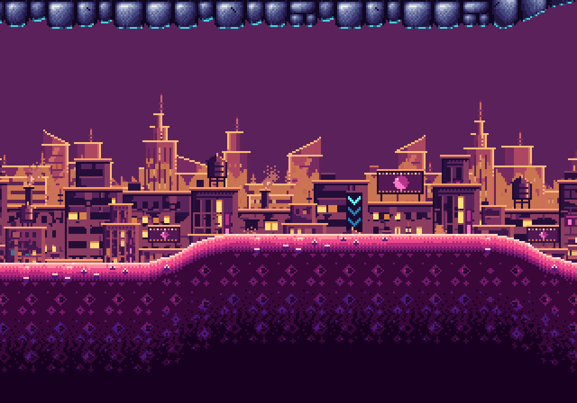
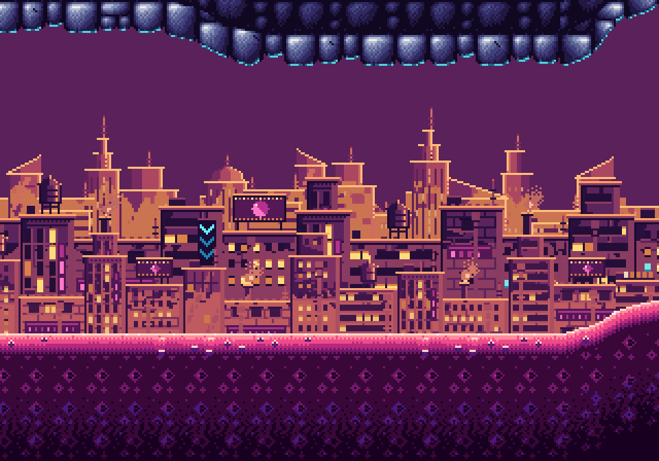
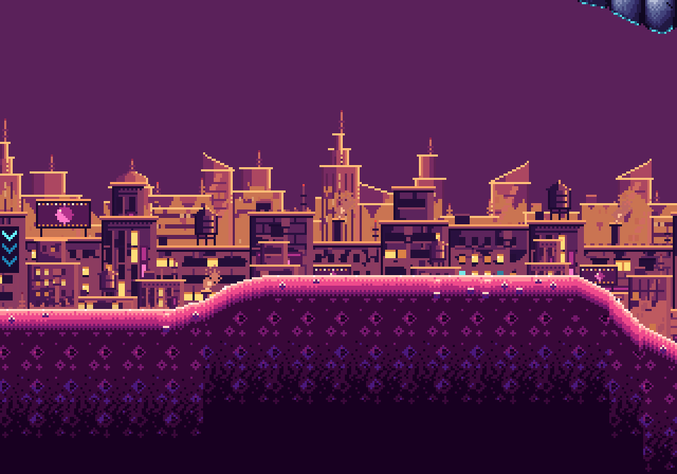
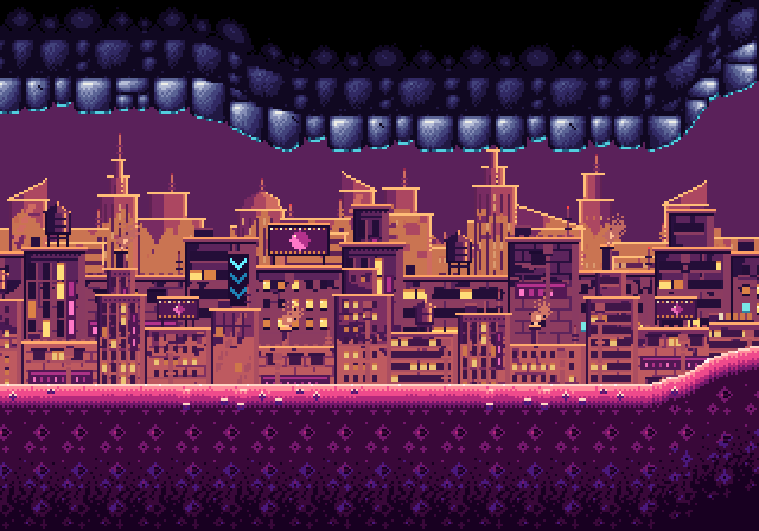
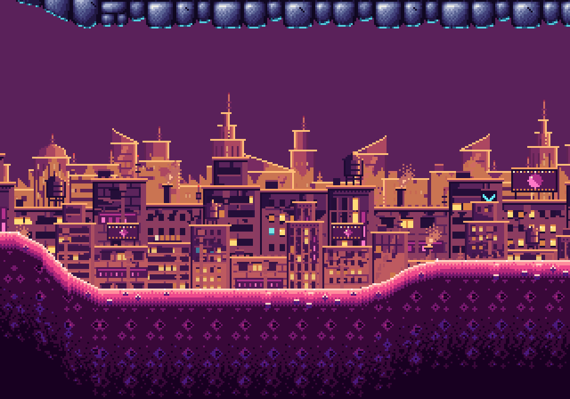
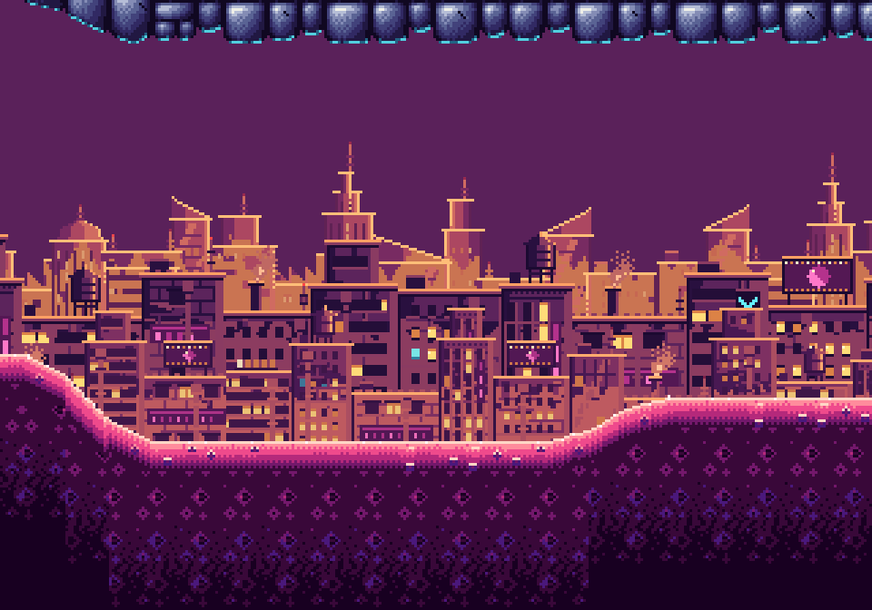
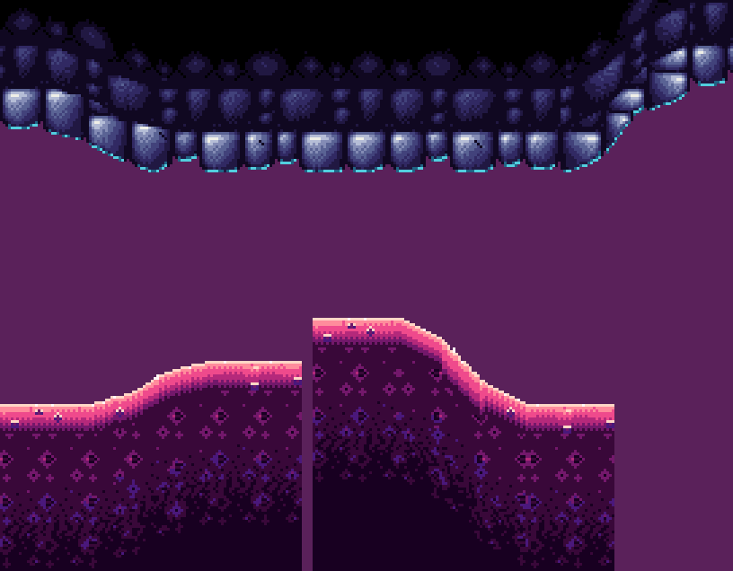
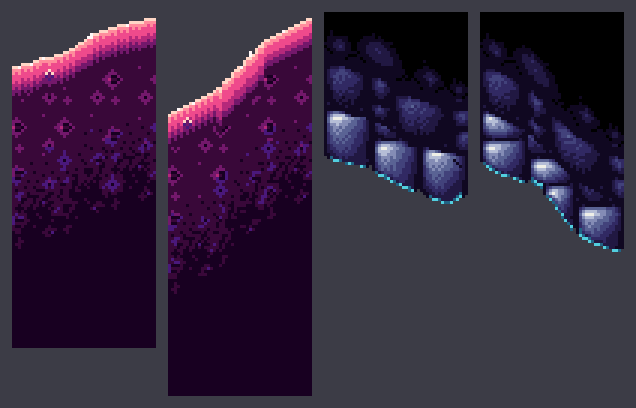

Left: new sloped fade. Right: the stepped fade from the earlier gallery. All mocks 320x224 at 3x.
Fill and fade bands keep one depth under the lip in every pixel column (fade starts 30 px under the lip surface, solid colour at 62 px).
Cost: 19 floor tiles and 18 roof tiles, 2368 bytes per C-ROM file, on top of the 14 flat fade tiles. Lookup table in numbers.txt and fade_map.json.
Mock C: both curves (the stair cut was worst here)

Sloped fadeStepped fade (earlier)
Mock A

Sloped fadeStepped fade (earlier)
Mock B
Sloped fade

Stepped fade (earlier)
Deep roof demo (roof lowered 32 px so the roof fade shows)

Sloped fadeStepped fade (earlier)
Scroll still (lip frame 3, mid scroll)

Sloped fade

Stepped fade (earlier)
Close-up of the curve pieces

Roof (deep) above; floor gentle curve left, steep curve right
Curve blocks with the new tiles

Each 48 px curve piece with its fill, fade and solid rows